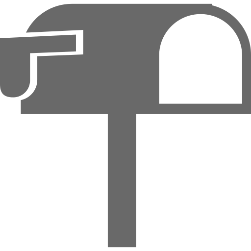

<ion-header>
  <nl-navbar [title]="title"></nl-navbar>
</ion-header>

<ion-content class="complaint-list csMargin csGrayBackground">
  <ion-refresher (ionRefresh)="doRefresh($event)">
    <ion-refresher-content></ion-refresher-content>
  </ion-refresher>
  <ion-fab top right edge>
    <button ion-fab (click)="newComplaint()" color="cool"><ion-icon name="add"></ion-icon></button>
  </ion-fab>
  <ion-list>
    <ion-item-sliding *ngFor="let complaint of complaints" #slidingItem >
      <a ion-item detail-push detail-none href="#" (click)="viewComplaint(complaint)" [style.border-left-color]="complaint.statusColor">
        <nl-list-view [complaint]="complaint"></nl-list-view>
      </a>
      <ion-item-options side="right">
        <nl-comment-button [master]="master" [complaint]="complaint"></nl-comment-button>
        <nl-close-button [master]="master" [complaint]="complaint"></nl-close-button>
        <nl-reopen-button [master]="master" [complaint]="complaint"></nl-reopen-button>
        <nl-satisfied-button [master]="master" [complaint]="complaint"></nl-satisfied-button>
      </ion-item-options>
    </ion-item-sliding>
  </ion-list>
  <ion-list class="no-comment" *ngIf="EmptyAppreciations">
      
      <span>No Complaints</span>
  </ion-list>  
  <ion-infinite-scroll (ionInfinite)="doInfinite($event)">
    <ion-infinite-scroll-content></ion-infinite-scroll-content>
  </ion-infinite-scroll>
</ion-content>
